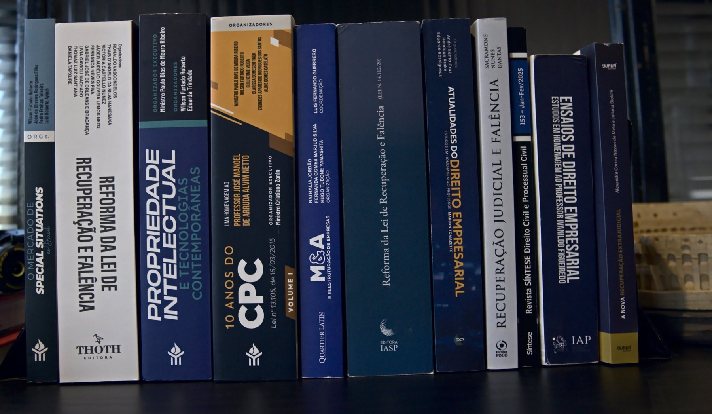

Livros e obras
Obras individuais, coletivas, capítulos e publicações em coautoria. Os dados bibliográficos são exibidos conforme informados pelo autor e pelas editoras. Nas obras com capa, clique na imagem para baixar o PDF com o capítulo ou artigo.

 Obra individual | Lançamento em 23 nov. 2026
A Recuperação Judicial de Produtor Rural: entre a retórica da inclusão e a prática da exclusão de créditos
Lumen Juris, 2026
Obra individual | Lançamento em 23 nov. 2026
A Recuperação Judicial de Produtor Rural: entre a retórica da inclusão e a prática da exclusão de créditos
Lumen Juris, 2026
Fruto da pesquisa de mestrado em Direito Comercial na PUC-SP, analisa as exclusões de créditos que tornam a recuperação judicial inviável para muitos produtores e propõe um microssistema de insolvência rural.
À venda no site da Lumen Juris e na Amazon | links em breveA recuperação extrajudicial como instrumento para contornar limitações da recuperação judicial, com dados sobre seu uso crescente no país.
Coautoria com Raoni Sales de Barros | Org. Wilson Furtado Roberto, João de Oliveira Rodrigues Filho, Pedro Freitas Teixeira e Luiz Roberto AyoubA continuidade de contratos de licença de marcas e de outros ativos de propriedade intelectual durante a recuperação judicial.
Coautoria com Rayane C. Melo | Org. Paulo Dias de Moura Ribeiro, Wilson Furtado Roberto e Maria Eduarda Trindade dos Reis | p. 373A aplicação subsidiária do CPC na recuperação judicial: prazos, recursos, competência do juízo recuperacional e métodos consensuais.
Org. executivo Min. Cristiano Zanin | Org. Min. Paulo Dias de Moura Ribeiro, Wilson Furtado Roberto e outros | Prefácio de Manoel de Queiroz Pereira CalçasPor que a recuperação judicial não atende micro e pequenas empresas e quais os limites do plano especial.
Org. Ronaldo Vasconcelos e outros | Capítulo 33 | p. 525–542Examina o tratamento do crédito tributário na recuperação extrajudicial em comparação com a recuperação judicial e defende que a lei passe a equipará-los.
Coautoria com Jorge Lucas de Oliveira | Org. Alexandre Correa Nasser de Melo e Juliana Biolchi | Prefácio do Min. Raul Araújo (STJ) | p. 347–360Mediação e plano alternativo de credores como caminhos para soluções colaborativas na recuperação judicial após a reforma de 2020.
Coautoria com Juliana Biolchi | Coord. Luis Fernando Guerrero | Org. Nathalia Jordão, Fernanda Gomes Barjud Silva e Hugo Tubone Yamashita | p. 447–475Os obstáculos de custo e de procedimento que afastam micro e pequenas empresas da recuperação judicial.
Org. André Santa Cruz, Henrique Arake e Eduardo Rossigneux | Capítulo 11 | p. 247Estudo empírico que compara os planos de recuperação judicial de produtores rurais com os das demais atividades no TJSP: deságio, prazos, juros, cram down e venda de UPIs.
Coautoria com Alessandra Monteiro Araujo Lima, Aluísio de Freitas Miele e Ana Lívia Carvalho Silva | Coord. Marcelo Barbosa Sacramone, Marcelo Guedes Nunes e Rodrigo D’Orio Dantas | p. 425As funções acrescentadas ao administrador judicial pela Lei nº 14.112/2020 e os desafios de atuar em varas não especializadas.
Coord. Ronaldo Vasconcelos, Fernanda Neves Piva, Gabriel José de Orleans e Bragança, Thais D’Angelo da Silva Hanesaka e Thomaz Luiz Sant’Ana | p. 435Analisa o acesso do produtor rural à recuperação judicial, as correntes jurisprudenciais sobre o registro na Junta Comercial e o marco temporal de sujeição dos créditos.
Org. Jáder Aurélio Gouveia Lemos Neto, Renato Hayashi, Catarina Ferraz e Victor Souza Soares | Prefácio de Manoel Justino Bezerra Filho | p. 453–483Sustenta que, após a Lei 14.112/2020, a CPR física pode ser submetida à recuperação extrajudicial, ainda que excluída da recuperação judicial.
Coautoria com Rodrigo Spinelli e Ramirhis Laura Xavier Alves | jan.–fev. 2025 | p. 82–87Lançamento previsto para o 2º bimestre de 2027. Os canais de venda serão informados aqui no lançamento.
Quero ser avisado do lançamentoManual da Administração Judicial — Teoria e Prática
- Autoria
- Filipe Denki Belém Pacheco [e coautores, se houver]
- Editora
- [a informar]
- Situação
- Em produção | lançamento previsto para o 2º bimestre de 2027
- ISBN
- [a informar]
- Páginas
- [a informar]
Sinopse
[Sinopse oficial, fornecida pelo autor ou pela editora.]
PACHECO, Filipe Denki Belém. Manual da Administração Judicial: teoria e prática. [Local]: [Editora], no prelo (lançamento previsto para 2027).
Relacionados
Lançamentos, palestras e entrevistas sobre a obra aparecem aqui automaticamente quando vinculados no painel.